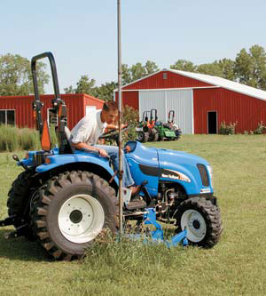
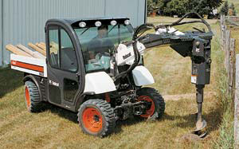

No single piece of equipment can save you as much time and effort on your homestead as a good tractor. Today’s tractors mow, dig, move, plow, till, scrape, grade and even generate electricity more efficiently than ever before.
It’s no exaggeration to say that the right tractor, when properly equipped, can save the rural property owner or small farmer many hours of labor each year. And it’s no exaggeration to say that the wrong tractor will waste hundreds of hours of your time and make you want to pull your hair out.
So before you buy your first tractor - or replace the old workhorse - it’s important to understand what’s available for use on a small farm or acreage and how you might put it to use. (See our chart to compare brands and models. - Mother)
Unless you’re operating a full-scale farm, you’ll probably want a compact tractor. Smaller, more versatile and less expensive than full-size farming tractors, compacts can handle almost any task. A new compact tractor with a typical set of implements will set you back $20,000 to $40,000. If you’re not ready to spend that much money, you may want to pay the farmer down the road who owns a tractor to help you out. In the process, you’ll learn about operating a tractor from an experienced neighbor.
If you’re set on owning a compact tractor, but your budget’s tight, shop for a used one. A word of caution though: Used tractors aren’t discounted as much as you might expect, and you may end up spending many frustrating hours up to your elbows in grease and hydraulic fluid, or spending a lot of money on maintenance if machine repair isn’t your specialty. Plus, unlike the new compacts, older tractors generally weren’t designed for today’s small-acreage property owner.
Before you begin shopping, make a list of the chores your tractor will need to perform - particularly the size of your jobs and the weight of things you will want to pick up. That list will dictate the size and type of machine you should purchase.
The features and performance of compact tractor brands currently on the market vary widely. When you shop for a tractor, insist on a test-drive, or better yet, request a few demonstration days on your property. Besides the nature of the work, many variables may influence your choice, including the topography of your land and your type of soil.
Also, it helps to compare your local dealers. Many high-quality compact tractors are available on today’s market, but if you don’t have a good rapport with your local dealer - or if the local dealer is 100 miles away - even the best-built machine eventually will become more of a burden than an asset. If you have several local dealers, then get to know them before you buy. You may decide to buy a tractor that didn’t initially catch your eye if you like the dealer who will help you maintain and repair your valuable machine.
This article will discuss some of the many uses for a compact tractor and the features and attachments that might be most useful to you. Shown in the image gallery are the eight models we evaluated. They were built in the United States, India, Korea and Japan, and range in price from about $15,000 to $25,000. They included at least three types of transmissions, and we tested a half-dozen different implements on them to make sure we understood their capabilities.
You don’t want a green tractor, a red tractor, an orange tractor or a blue one. You want a tractor that does the work you need it to do, maintained by a conscientious dealer who’s backed by a competent manufacturer. Whatever color you choose, you’ll come to love it. The “red tractor” people became red tractor people because they owned one that did its job well. Ditto for green, orange and blue. And don’t fall for styling: Beautiful is as beautiful does. Any tractor is beautiful when you’re lounging on the porch with a cold drink and admiring a good day’s work finished early.
Most of today’s compact tractors are equipped with four-wheel drive. Unless you live where it seldom rains, never snows and the sand is never soft under your wheels, then you’ll probably want a four-wheel-drive tractor. Older two-wheel-drive tractors were primarily designed for work in plowed fields, and farmers didn’t do any fieldwork when the soil was wet. Therefore, such tractors seldom got stuck.
On today’s diversified small farm, you’ll work in more varied situations, so you’ll run a greater risk of the tractor getting stuck. And, of course, you’re likely to get your pickup truck stuck, in which case you will need the tractor to pull it out. The additional cost of four-wheel drive in today’s compact tractors is relatively reasonable. Four-wheel drive makes the tractor safer in all conditions and less likely to slide sideways under a load. Tractors that slide around tend to tear up buildings, fences and other vehicles. They also can pose a hazard to people nearby. (For more on tractor safety, see Tractor Safety is No Accident, April/May 2005. - Mother)
There are substantial differences among today’s tractors, and you have many options from which to choose. One of your most important decisions will be the choice of transmission. There are “retro” tractors on today’s market that use manual transmissions and lever-style hydraulic controls your grandfather would have been comfortable with. If you grew up using a 1948 Ford and want to replicate that experience, there’s a new tractor out there for you. The Farmtrac brand (see photo) offers tractors based on venerable Ford designs and transmissions that will look and feel familiar to people with a farming background.
Manual tractor transmissions are similar to manual truck transmissions, because they both have a clutch and a gearshift. However, most new-tractor customers are more attracted to the clutchless “shuttle” transmissions or the even more advanced hydrostatic transmissions available on many models.
Shuttle transmissions allow you to set the tractor in a particular speed and power range, then control its motion with the throttle. With manual or shuttle transmissions, you must stop and shift gears to go backward. With the most advanced hydrostatic transmissions, you don’t have to shift at all. Forward and backward, fast and slow - a single pedal usually controls both speed and direction. Some transmissions use two pedals; one makes the tractor go forward, the other makes it go in reverse. These days, most manufacturers offer the hydrostatic option, but transmissions work in a variety of ways, and you should try out each option.
The convenience of the newer transmissions is obvious, but they have at least two disadvantages that you probably won’t notice unless you have driven older tractors.
The first is a disadvantage only if you plan to pull implements. On some newer tractors, it’s hard to hold a steady speed, because your foot rests on a sensitive throttle pedal. Look for a model with a manual “override” throttle that you can use instead of the foot throttle.
Secondly, you may find yourself causing more accidental damage when driving a tractor with a slick, new hydrostatic transmission. On tractors we tested with this type of transmission, we caught ourselves whipping in and out of the shed, changing directions much more quickly than we did using an old-fashioned transmission. A couple of times, we narrowly missed the shed’s support pillar. We would have accomplished very little that day if we were forced to rebuild the shed.
The other big decision you’ll need to make while choosing a compact tractor is how much power you require. Generally speaking, the more horsepower, the more expensive the tractor. Think of the most demanding job on your property. If you intend to pull a four-bottom plow, for instance, ask the local dealer how much power it would take to drag that implement through your particular soil. Many of us put up hay in big, round bales that can weigh up to 1,500 pounds. If you intend to move them with your tractor, then you’ll need a machine with at least 50 horsepower (see photo).
The two sources of attachment power on a tractor are the power takeoff (PTO) - one or more exposed spinning axles that can be used to power a variety of implements - and the hydraulic system. Most implements use a combination of the two. For instance, the blade of a rotary brush mower is powered by the rear PTO, while the tractor’s hydraulic system drives a three-point hitch to raise and lower the whole mower.
For many rural homeowners, lawn mower maintenance is a persistent and aggravating responsibility. If you mow more than a half-acre, conventional lawn mowers and even many lawn tractors will deteriorate rapidly under the workload - especially if your lawn, like most rural lawns, contains mole tunnels, submerged tree stumps or granite outcrops. I’ve discovered that baling twine and woven wire fencing also are formidable threats to the lawn tractor. You’d be impressed to see how quickly my lawn tractor can unwrap the twine from a 6-foot-diameter hay bale and install it around the hub of my mower deck.
Tractors can run two main categories of mowers: brush mowers and finish mowers. Brush mowers are almost always attached behind the tractor; they’re powered by the rear PTO and are designed to knock down thick grass and small trees. This process will improve the accessibility of your property, but not necessarily its appearance. The brush mower leaves the foliage with a very bad haircut.
Rotary brush mowers are one of the most ubiquitous attachments on small farms, because they are extremely useful to control weeds and manage pasture. The rotating blade is enclosed in a rectangular or round metal box about 6 feet wide and 6 inches high and is usually pulled behind the tractor, held up by a little wheel in back.
The less common form of brush mower is a flail mower, which has small blades with flexible arms that are attached to a horizontal shaft inside a cylindrical housing. When the shaft rotates, the blades extend. The blades are not fixed, so it’s less likely that hard objects will be thrown from this type of mower. Flail mowers generally are used for roadsides and areas where hidden objects can damage a conventional mower.
Finish mowers are similar to rotary brush mowers, but they are designed to leave an attractively manicured lawn. Finish mowers can be mounted either behind the tractor like a brush mower, or under the “belly” of the tractor if your machine has a centrally located PTO.
Do you need both a brush mower and a finish mower? If you mow both lawn and pasture, then you’ll eventually want to own both types of mower. If you already own a lawn tractor, you may want to buy a brush mower for your pasture first, then add a finish mower when the lawn tractor wears out. But don’t even consider mowing brush with a finish mower unless you just love repairing the mower deck.
For a lawn-mowing landowner, the first ride on a compact tractor with a belly-mounted finish mower can precipitate a form of ecstasy. The tractor, with its big, turf-friendly tires and extra power, is smoother and faster than a lawn tractor. Some models, such as the New Holland we tried out for this article (see photo), are equipped with state-of-the-art steering that allows even a 30-horsepower four-wheel-drive tractor to turn on a dime. New Holland calls the feature “SuperSteer.” Several other major manufacturers have their own versions.
Belly-mounted finish mowers generally are powered by a belt attached to a pulley that’s driven by the tractor’s central PTO. New tractors may even have special high-speed PTO units exactly for this purpose.
Ask your tractor dealer about which PTO configurations cause the least trouble. Some tractors eat drive belts; others operate trouble-free for years.
If you’re going to put up hay, then you’ll probably want either a hay mower or a sickle bar mower and one of the bigger tractors, depending on your baling equipment.
If lawn mowing will be the main job for your compact tractor, then you might be better off with a high-end zero-turning-radius lawn mower. But if you need more versatility and decide a compact tractor is right for you, you’ll get to enjoy the biggest work-saving component on your tractor: the hydraulic front-end loader (see photo).
Compact tractors comprise the majority of the tractor market today, and nearly every one of the dozens of models you’ll see lined up in the front lot of your local dealership will come equipped with a front-end bucket (the part of the loader that scoops) attached to heavy hydraulic arms.
If you’ve never owned one, you may need to consider the utility of the front-end loader, which can be used to do the obvious, such as scoop and carry dirt, manure or gravel. But it also can carry your tools to the work site and will end up doing many other things you hadn’t planned, such as ferrying bags of feed and concrete, and hauling water. It also can lift and place heavy fence posts, brace the wall of your new shed and pull the kids’ raft out of the pond. Most of us find a new use for our front-end loaders every few days.
Some new tractors have old-fashioned systems of levers that operate the bucket. Others have nifty joysticks that govern the speed and movement of the bucket. Caution: Don’t let the controls fool you. Some new tractors don’t have enough hydraulic power to operate their buckets effectively.
If the hydraulic pump on the tractor doesn’t provide enough power, your loader will be useless. The horsepower of the tractor’s engine doesn’t guarantee the power of the hydraulic pump. Before you buy it, try out the loader with a full bucket of something heavy.
To some extent, controls on heavy equipment are a matter of taste. If you grew up using your uncle’s front-end loader, then you may prefer the traditional two-lever bucket control. Many tractors still have them, and you won’t have to learn a new technique to operate them. If you don’t have experience using lever controls, you may prefer joysticks.
A delicate touch is extremely important when controlling hydraulic equipment. The best tractors have high-quality hydraulics that allow the operator to move the bucket an inch at a time. Over the life of your tractor, this will save you thousands of dollars you might have spent repairing the stuff you tore up trying to use a herky-jerky loader. When you test a loader’s performance under a burden, test its delicacy. A good tractor, like a good mule, can pull hard or soft depending on the situation.
The big hydraulic arms on which your loader bucket rides can be useful in a number of other ways. If you feed your livestock from big, round hay bales, a bale spear mounts conveniently on the quick-attach brackets of modern loader arms (see photo). The loader arms provide the most powerful and versatile method for moving big bales. Forklift attachments also can be mounted on the arms.
The price of a new tractor, though it may be daunting, isn’t complete without the attachments you’ll need to put your machine to work. Besides the obvious benefits of mowers and front-end loaders, you need to consider the other ways in which your tractor can be of service.
Rear-mounted rotary tillers (also called rototillers) are extremely powerful and handy for large-scale gardens and landscapes (see photo). These attachments generally are powered by the rear PTO. They work most effectively on tractors with an independently controlled PTO. (On older tractors, the speed of spinning attachments is controlled by the speed of the engine.)
Before you buy, try out a tractor with an independent PTO control and a switch that allocates power to the attachment slowly, allowing the blades to start slow and then speed up automatically, such as John Deere’s Twenty Series compact utility tractors. The modern controls prolong the life of your attachments and will help you manage your land gently.
A good 4-foot-wide rototiller can prepare a half-acre garden for planting in less than an hour. If you’ve been running a walk-behind tiller or hand tilling, then you owe it to yourself to give a tractor-mounted tiller a try. However, in some soils, the tractor and the tiller can have unintended consequences: Your soil can be compacted by the weight of the tractor, creating a hardpan condition that inhibits the growth of plants’ deep roots.
A long, unpaved driveway calls for an open blade, a box blade (see photo) or perhaps both. The box blade is the more specialized tool for driveway maintenance. As you drag the box blade along your driveway, it scrapes up the gravel and dirt from the high points and deposits them in the low spots. The box blade greatly simplifies this process.
An open blade essentially will do the same work, but it also tends to push materials out to each side, which necessitates a number of passes in order to create a flat, consistent roadbed. It will take you a while to create a system for driveway maintenance with an open blade. The open blade has the advantage, however, of being useful for pushing snow off the road or driveway. Box blades quickly fill up with snow and are not practical for this task.
To remove deeper snow, you’ll want to consider a front-mounted snow blower or snow auger attachment that throws snow high and to the side.
Livestock farmers cherish their posthole augers. A good auger with an appropriate diameter and plenty of horsepower turns the backbreaking labor of digging postholes into a brief, satisfying chore. A rancher friend of mine says that smart stockmen consider themselves fully equipped with a pickup, a stock trailer and a small tractor with a posthole auger. Augers generally are mounted on the tractor’s rear three-point hitch and driven by the rear PTO.
Another attachment to consider is a hydraulic backhoe (see photo). You probably won’t want to equip a tractor smaller than about 50 horsepower with a backhoe, unless you’re only going to dig in soft ground. With a 50 horsepower tractor, however, the backhoe attachment makes short work of major projects such as digging trenches. Massey Ferguson’s backhoe attachments are particularly well-integrated when used on the company’s midsize utility tractors.
If you want to secure your homestead’s power supply, then consider a PTO-driven power generator. They are efficient, powerful and comparatively inexpensive. In the event of a utility grid failure, you can make sure the house stays warm and the freezer stays cold - the only fuel you’ll need is for the tractor. These handy generators are usually mounted on wheels and can be pulled quickly to the location where you need the power.
One final note on attachments: You might save money if you buy your attachments separately. Some tractor manufacturers charge a premium for attachments, and you will find that many attachments on the market are one-size-fits-all from specialized manufacturers. We particularly liked the rototiller we tested from Buhler.
Because most of us can hire someone with a tractor to do work fairly inexpensively, there’s no sense in buying the cheapest tractor available - unless it’s also the best tractor for your needs. You may find that a relatively inexpensive machine fulfills all your needs. Good for you. But if you buy a tractor that is almost good enough in order to save 10 percent or 15 percent off the initial price, you’ll pay for the difference in years of frustration.
If you find that the machine you need is just too expensive, then hire a neighbor and keep saving your money for a couple more years. Once you can afford it, the joy of owning the tractor that’s perfect for you will be all the sweeter.
Before you decide to buy a traditional tractor, you may want to consider a couple of unconventional options.
When we say “unconventional,” we mean it. These vehicles are so new there aren’t even words in common usage to describe them or what they do. However, that doesn’t mean these vehicles are untested. They’ve been used extensively in commercial industries such as landscaping and construction for years, and their dependability is indisputable. But they are new in the small-farm market, and we’re not entirely sure what to call them. So for lack of a more definitive name, we’ll refer to them as utility vehicles (UTVs) and loaders.
Based on the ATV (All-Terrain Vehicle) platform, these handy four-wheel- and six-wheel-drive “Utility Vehicles” combine the mobility, durability and speed of an off-road vehicle with utility features such as dump-beds, winches, trailer hitches and even hydraulic attachments.
The John Deere Gator (see photo) is the best-known vehicle in this class and will appeal to farmers who favor John Deere. Many manufacturers make versions equipped to move small payloads on rough terrain with a minimum of fuss.
The new invention from Bobcat takes the utility vehicle to a higher level, however. The ToolCat (see photo) features a top speed of 18 mph, all-wheel steering, a front-end hydraulic lift capable of hoisting 1,500 pounds and an 18-cubic-foot dump bed with a 2,000-pound load capacity. Attachments include snow blowers, mowers, augers, grapples, grader blades and many others. We predict that some small farms eventually will do without a tractor and instead depend on a UTV such as the ToolCat.
Not to be confused with “front-end loaders,” these small, eminently maneuverable machines are based on “skid-steering”- this means they turn and pivot by controlling the rotational speed and direction of the loader’s wheels or tracks. These skid-steer loaders are specially adapted for farm chores with a full range of hydraulic attachments and are available in a wide spectrum of power ranges.
Many loaders come equipped with four brake-controlled wheels that allow the machines to pivot in place. This ability is quite valuable in tight quarters. For cleaning out stalls, nothing compares to a loader. Bobcat is the leading provider, and many farmers simply refer to the entire category as “Bobcats.”
The Minnesota manufacturer ASV specializes in rubber-tracked loaders for the small farm (see photo). The pressure put on the ground from the tracks of a 30 horsepower machine actually is less than a grown man’s footprint on a pounds-per-square-inch basis, and getting this machine stuck is almost impossible. An ASV loader glides over treacherous mud and deep snow, and, like its wheeled counterparts, the loader can pivot in place. A single joystick that governs speed and direction controls the loader’s movement. A second joystick controls the hydraulic arms on which attachments can be mounted.
Consider your own unique approach to managing your property - you may find one of these machines is a greater asset than a traditional tractor.
|
SCOTT HOLLIS These compact tractors can mow the lawn, till the garden, blow snow, grade the driveway, haul hay, dig a pond, drill postholes and generally make rural life easier. |
SCOTT HOLLIS This Farmtrac sports the classic look and feel of Ford tractor that will appeal to people who grew up using their grandfather’s tractor. |
SCOTT HOLLIS This Kubota is equipped with a bale spear and box blade. The spear makes moving bales easy, and the rear-mounted box blade allows you to smooth over bumps and ruts on unpaved roads. |
|
 SCOTT HOLLIS A belly-mounted finish mower makes lawn mowing fast and easy. Some tractors, such as this New Holland, feature articulated front axles for steering in tight spots. |
BRYAN WELCH Used on a sufficiently powerful tractor, such as this Massey Ferguson, a backhoe is ideal for excavation projects. |
SCOTT HOLLIS Front-end loaders are useful for any number of homestead chores, not the least of which is transporting dirt as performed by this Montana. |
|
JOHN DEERE The John Deere Gator is the best-known “Utility Vehicle,” or UTV, combines the mobility, durability and speed of an off-road vehicle with utility features such as dump-beds, winches and trailer hitches. |
 BOBCAT The Toolcat features a top speed of 18 mph, all-wheel steering, a front-end hydraulic lift capable of hoisting 1,500 pounds and an 18-inch cubic-foot dump bed with a 2,000 pound load capacity. |
ASV The Minnesota manufacturer ASV specializes in rubber-tracked loaders for the small farm. |
|
SCOTT HOLLIS This John Deere rear rotary tiller is ideal for market gardeners who cultivate large plots of land. |
|
|